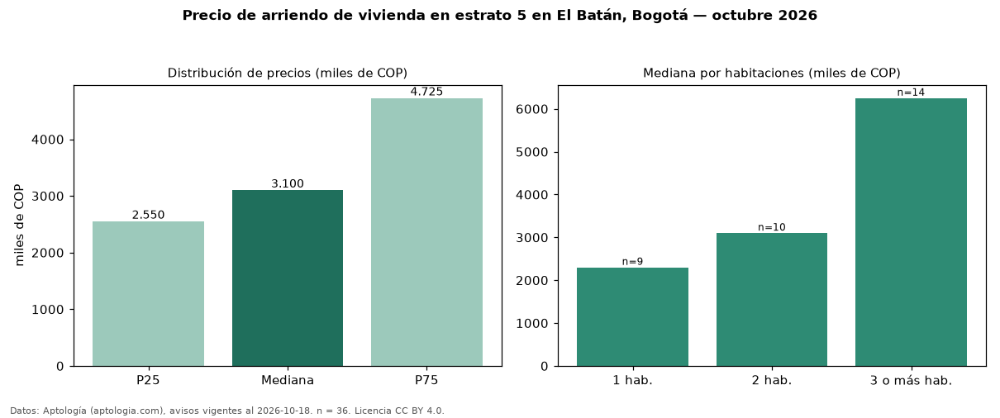

Precio de arriendo de vivienda en estrato 5 en El Batán, Bogotá — octubre 2026
Con 36 avisos vigentes, el canon mediano de vivienda en estrato 5 en arriendo en El Batán (localidad de Suba), Bogotá es COP 3,10 millones al mes. Por metro cuadrado, la mediana es COP 42.254/m² al mes (n = 36 avisos con área). Incluye todos los tipos de vivienda de estrato 5 del barrio. El área mediana anunciada es 70 m². El segmento con más oferta es el de 3 o más habitaciones (14 avisos, mediana COP 6,25 millones); pasar de 1 habitación a 3 o más habitaciones cambia la mediana +172 %. La mitad central de los avisos va de COP 2,55 millones a COP 4,72 millones (razón 1,9), una dispersión moderada. 92 % de los avisos con el dato declara parqueadero o cochera. Datos: Aptología (aptologia.com), CC BY 4.0 — https://www.aptologia.com/arriendo/bogota/el-batan. Archivos: PDF, CSV con las cifras y gráfica PNG.

| Avisos únicos | 36 |
|---|---|
| Percentil 25 | COP 2.550.000 |
| Mediana | COP 3.100.000 |
| Percentil 75 | COP 4.725.000 |
| Mediana por m² | COP 42.254 |
Fuente: avisos vigentes de portales inmobiliarios recopilados por Aptología, deduplicados (mínimo 30 avisos únicos por celda). Precios pedidos, no cerrados. Fecha: 2026-10-18.